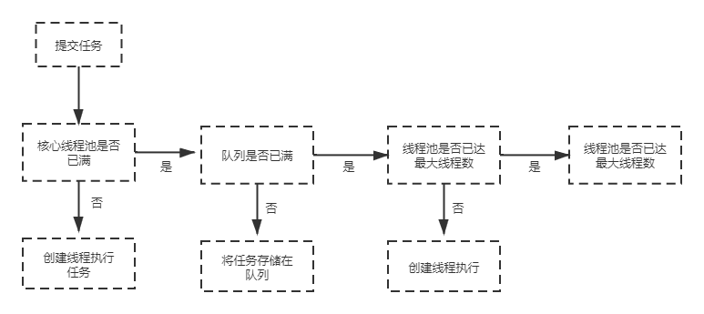

线程池的好处
1.重用已经存在的线程，减少了线程的创建和销毁开销。
2.可有效控制最大并发的线程数，提高了系统资源的使用率避免很多竞争，避免了OOM、死锁等。
四种Java线程池功能及分析
线程池都继承了ExecutorService的接口，所以他们都既有ExecutorService的生命周期方法：运行、关闭、终止。因为继承了ExecuterService接口，所以它在创建的时候就是处于运行状态，当线程没有任务执行时，就会进入关闭状态，只有调用了shutdown()的时候才是正式的终止了这个线程池。
Executors工厂类提供我们的线程池一共有四种：
- newCachedThreadPool创建一个可缓存线程池，如果线程池长度超过处理需要，可灵活回收空闲线程，若无可回收，则新建线程。
- newFixedThreadPool 创建一个定长线程池，可控制线程最大并发数，超出的线程会在队列中等待。
- newScheduledThreadPool 创建一个定长线程池，支持定时及周期性任务执行。
- newSingleThreadExecutor 创建一个单线程化的线程池，它只会用唯一的工作线程来执行任务，保证所有任务按照指定顺序(FIFO, LIFO, 优先级)执行。
参数属性介绍
1.核心线程数corePoolSize：核心线程数量。提交一个任务的时候，会对线程池里面的当前存活线程数和这个corePoolSize进行比较，不同情况会有不同的操作。
2.最大线程数maximumPoolSize：线程池所能创建的线程的最大的数量。
3.空闲线程的超时时间KeepAliveTime：如果线程池当前线程数是大于corePoolSize,并且这些线程中是有空闲线程的，也就是说这些线程没有在执行任务，那么空闲时间超过keepAliveTime时，这些线程会被销毁，直到当前线程数等于corePoolSize，这时即使有空闲线程并且超时了也不会进行线程销毁。
4.任务队列WorkQueue：这是一个阻塞队列，用于存储提交的任务。
5.线程工厂threadFactory：线程池会使用这个工厂类来创建线程，用户也可以自己实现。
6.任务的拒绝处理handler(RejectExecutionHandler)：在线程数已经达到了最大线程数，而且任务队列也满了之后，提交的任务会使用这个handler来处理，用户也可以自己实现。默认是抛出一个RejectExecutionException异常。
线程池运行原理
当用户提交一个任务时，线程池内部是如何运行的
1.创建一个线程池，在还没有任务提交的时候，默认线程池里面是没有线程的。当然，也可以调用prestartCoreThread方法，来预先创建一个核心线程。
2.线程池里面还没有线程或者线程池里存活的线程数小于核心线程数corePoolSize时，这时对于一个新提交的任务，线程池会创建一个线程去处理这个提交的任务。当线程池中存活的线程数小于等于核心线程数corePoolSize时，线程池里面的线程会一直存活着，就算空闲时间超过了keepAliveTime，线程也不会被销毁，而是一直阻塞在那里一直等待任务队列的任务来执行。
3.当线程池中存活的线程数已经等于corePoolSize了，这时对于一个新提交的任务，会被放进任务队列workQueue排队等待执行。而之前创建的线程并不会被销毁，而是不断的去拿阻塞队列里面的任务，当任务队列为空时，线程会阻塞，直到有任务被放进任务队列中，线程拿到任务后继续执行，执行完了过后会继续去拿任务。这也是为什么线程池队列要用阻塞队列。
4.当线程池中存活的线程数已经等于corePoolSize了，并且任务队列也满了。这里假设maximumPoolSize > corePoolSize(如果相等的话，就直接拒绝了)。这时如果再来一个新的任务，线程池就会继续创建新的线程来处理新的任务，直到线程数达到maximumPoolSize，就不会再创建了。这些新创建的线程执行完了当前任务后，在任务队列里面还有任务的时候是不会销毁的，而是去任务队列拿任务出来执行。在当前线程数大于corePoolSize的情况下，线程执行完当前任务，会有一个判断当前线程是否需要销毁的逻辑，如果能从任务队列中拿到任务，那么继续执行；如果拿任务是阻塞(说明任务队列中没有任务了)，那么当空闲时间超过keepAliveTime时就直接返回null并销毁当前线程，直到线程池中的线程数等于corePoolSize，之后才不会进行线程销毁。
5.如果当前的线程数达到了maximumPoolSize，并且任务队列满了。这时还有新任务过来，那就直接采用拒绝处理器进行处理。默认的处理器逻辑是抛出一个RejectExecutionException异常。你也可以指定其他的处理器，或者自定义一个拒绝处理器来实现拒绝逻辑的处理(比如将这些任务存储起来)。JDK提供了4种拒绝策略处理器：AbortPolicy(抛出一个异常，默认的)，DiscardPolicy(直接丢弃任务)，DiscardOldestPolicy(丢弃队列里最老的任务，将当前这个任务继续提交给线程池)，CallerRunsPolicy(交给线程池调用所有的线程进行处理)。

线程池工作原理
newFixedThreadPool()
Android中最常用到的线程池
fixedThreadPool(size) 只有一个参数size，就是线程池中最大可创建多少个线程
在实现上跟ThreadPoolExecutor类似fixedThreadPool简化了实现过程，把corePoolSize和maximumPoolSize的值都设为传入的size，并且设置keepAliveTime为0ms，然后采用的LinkedBlockingQueue队列，这个队列是链式结构，所以是无边界的，可以容纳无数个任务。
总结：比如我创建3个线程的fixedThreadPool，当3个都为活跃时，后面的任务会被加入无边界的链式队列，有空闲，就执行任务。
newCachedThreadPool()
对比FixedThreadPool来说CacheThreadPool就要更快一些，因为这里的maximumPoolSize:线程允许最大线程数为MAX_VALUE(无限大),也就是说，只要有任务并且其他线程都在活跃，就会开启一个新的线程(因为没有上限)而当有空闲的线程的时候，就会调用空闲线程执行任务。
newScheduledThreadPool()
创建过程很简单，只要传入corePoolSize()线程的核心线程数。就可以开启这个线程池然后我们需要使用他的定时任务，就需要实现他的scheduleAtFixedRate方法，这个方法有4个参数：
1 | public ScheduledFuture<?> scheduleAtFixedRate(Runnable command, long initialDelay, long period, TimeUnit unit) { |
command：要执行的任务
initialDelay：每次任务执行的延迟，比如传入1，就会每隔1秒执行一次
period：执行周期
unit：第二个参数的时间单位
newSingleThreadExecutor()
创建一个单线程化的线程池，它只会用唯一的工作线程来执行任务，保证所有任务按照指定顺序(FIFO, LIFO, 优先级)执行。现行大多数GUI程序都是单线程的。Android中单线程可用于数据库操作，文件操作，应用批量安装，应用批量删除等不适合并发但可能IO阻塞性及影响UI线程响应的操作。
线程池的使用过程中存在的一些问题以及解决方案
1.在一些存在流量高峰，一段时间内并发量很大，参数设置不当可能导致性能不佳，cpu负载过高，内存溢出，拒绝策略设置不当导致任务丢失或者执行失败等问题
这些问题可以使用上面提到的自定义创建线程池，自行根据业务场景来设置线程池的参数，从而规避上述的一些问题
2.服务重启导致内存的任务队列中的任务全部丢失
这种情况，如果业务场景是需要保证消息百分百不丢失，那就要在提交任务的时候，对任务做离线存储，在任务执行完过后，再将对于的离线存储的任务删除。服务重启后，需要起一个后台线程去加载一个离线存储的任务，提交到线程池去执行。